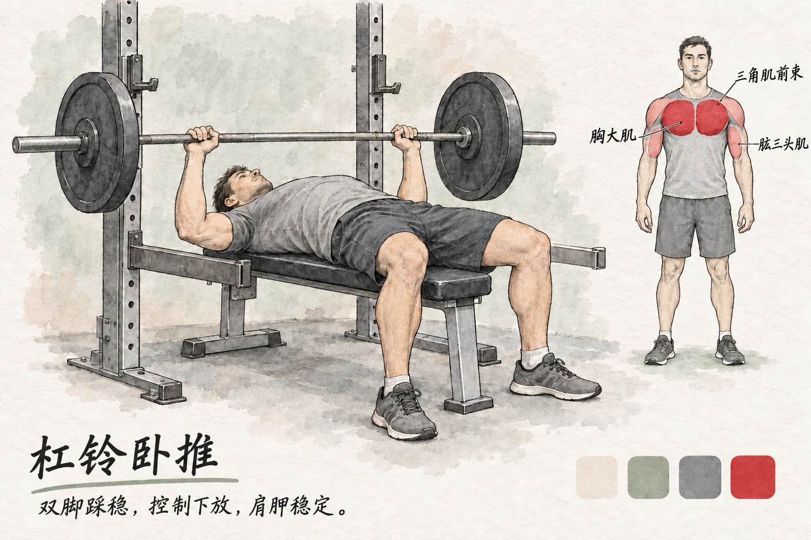

01 · 杠铃卧推
3 × 6～10休息 120～180 秒主要：胸大肌辅助 / 稳定：肱三头肌、三角肌前束查看肌群位置

- 先调保护杠，握杠使用拇指环握。眼睛在杠下，上背和臀部贴凳，双脚踩实。
- 肩胛轻收稳定，握距以底部前臂接近竖直为准；手腕尽量在前臂上方。
- 控制下放到胸部中下段附近，在肩部舒服的范围轻触或接近胸，不砸胸。
- 推回上方，臀部不离凳；无人保护时不尝试极限重量。
节奏与呼吸：下放约 2 秒，推起平稳；用力时呼气，不长时间憋气。
常见错误：砸胸反弹、臀部抬起、手腕过度后折、把杠放到颈部
替代 / 降阶：器械推胸 / 轻哑铃卧推